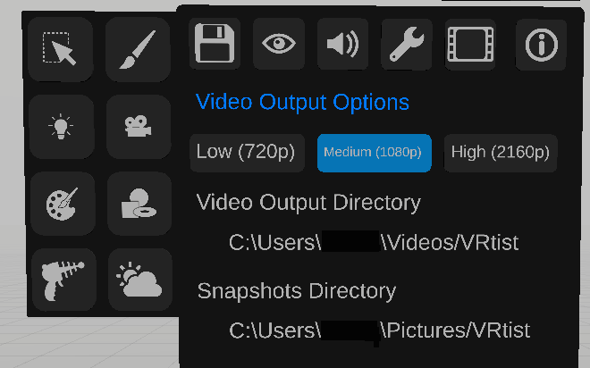

Settings
Save and load

The settings panel contains multiple sections.
The Save and load section allows the user to save the current state of the scene or reload the scene to the previous saved state.
It also contains options to export to Universal Scene Description (USD) and USD animation. (Experimental feature)
Display options

The display section allows the user to choose what he wants to display in the user interface.
The gizmos and locators options are also available in the top part of the palette.
Sound options

The sound section allows the user to set the level of various sounds.
Advanced options

The advanced options allow the user to define the Asset bank directory, switch primary and secondary controllers, keep the palette open when the trigger is released, display fps on the secondary controller, and show the console window.
Video Output options
The video Output Options allow the user to define the quality of video outputs, and destination folder.

The last panel displays version information, and if the scene is hosted on vrtist or in blender.